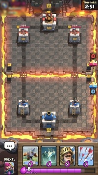
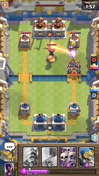
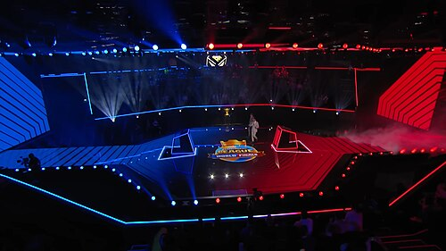

Clash Royale Article Content
Overview
Clash Royale is a 2016 real-time strategy mobile game developed and published by Supercell. It combines elements of collectible card games, tower defense, and multiplayer online battle arena (MOBA). Players collect cards and create a deck to use in 3–5 minute battles, with the aim to destroy opposing towers whilst defending their own. Released worldwide on March 2, 2016, the game is the first spin-off of Clash of Clans, another title developed by Supercell.
With development beginning in 2014, Clash Royale shifted towards gaming on vertical phone screens (as opposed to tablets) and real-time gameplay compared to Clash of Clans. It uses a free-to-play monetization model, including microtransactions and artificial scarcity of in-game resources. From July 2019, it features monthly seasons, which coincide with regular content updates and a monthly battle pass called “Pass Royale”.
Clash Royale received favorable reviews from critics when it was first released, with reviewers citing the game's quick, short matches and its depth of strategy. Matchmaking received mixed reviews. It has also been referred to as a "pay-to-win" game and has drawn criticism for its monetization techniques.
Gameplay


Clash Royale is a real-time strategy mobile game incorporating elements from collectible card games, multiplayer online battle arenas (MOBAs) and tower defense.[1] Players compete in head-to-head battles to destroy opposing towers while defending their own.[2] The primary game mode features 1v1 matches in which players earn trophies and progress through a series of themed arenas, unlocking new cards and gameplay features as they advance.[1][3] Upon reaching a sufficiently high trophy count, players gain access to ranked play, which is divided into seven leagues with the highest being Ultimate Champion.[4][5]
Battles take place in an arena where each player has three towers—one King Tower and two Princess Towers.[6][7][a] The arena is divided into two halves by a river, with bridges on the left and right forming two lanes where players can focus their attacks.[2][9] Each player uses a deck of eight cards,[1] four of which are available in their hand at any given time.[10] Cards are deployed onto the arena by spending elixir, a resource that generates passively over time, up to a maximum of 10.[10][11]
Cards may represent troops, buildings, or spells. When deployed, troops typically advance towards enemy towers; some target the opponent's troops on the way, while others charge directly towards the tower.[1] Princess Towers automatically attack enemy units that cross onto their side of the river.[12][13] The King Tower becomes active after a Princess Tower is destroyed or once the King Tower has taken damage, and will then assist in defending against enemy troops.[14] Buildings can be placed to defend territory, whilst spells cause effects like damaging enemy units and structures. Most troops and buildings can only be deployed by players onto their own side of the arena, corresponding to the lower half of the screen, but spells can be used anywhere. If a player destroys an opponent's tower, the area where they can place troops and buildings expands partially to the opponent’s side of the arena.[7]
Battles last up to three minutes in normal time, with elixir generation doubling during the final minute. A player wins by destroying the opponent’s King Tower or by destroying more towers than their opponent by the end of normal time. If both players have destroyed the same number of towers, the match enters overtime, where the first player to destroy a tower wins.[15] If no tower is destroyed within two minutes of overtime, a tiebreaker is applied in which the player with the tower on the lowest remaining health loses.[7] During the final minute of overtime, elixir generation is tripled.[16]
Deck-building is another core gameplay element in Clash Royale.[2][17] Between battles, players can select any eight cards from their collection to form their deck.[1][18] Players can collect cards from chests earned through gameplay, purchase them from the in-game shop, or join a clan and request them from clan members. Once they have collected enough copies of the same card, they can upgrade that card using in-game currency, which increases its effectiveness. Upgrading cards also contributes to the player's "King Level", the level of their account, which also affects their towers' strength.[1][7] Card levels are an important consideration when building a deck, as higher-level cards are stronger. However, players must also account for the synergy between cards in their collection. In-battle strategy varies depending on the deck, but generally consists of efficient elixir management, precise card placements and timings, and tracking an opponent's elixir and cards.[7][12]
Other Game Modes
Throughout its development, Supercell has introduced numerous additional game modes. A cooperative 2v2 mode allows players to team up with friends or other online players.[7][19] The game also features permanent and limited-time challenges and events, which require an entry fee at the in-game currency and reward players based on the number of wins achieved before three losses. Variants include the draft challenge, in which players select from a series of two-card choices to build their deck before each battle, and various events added to celebrate the introduction of new cards or features.[7][20]
Clan Wars, introduced in April 2018, allowed players to work together. This mode was replaced by Clan Wars 2 in August 2020. In the updated format, players must construct four unique decks without overlapping cards,[7] which are used to attack opposing clans' defences.[21]
In July 2025, Merge Tactics was added as a permanent game mode. The mode features a four-player, turn-based format in which players select units to deploy and merge in order to strengthen them before sending them into automated battles. Its gameplay is comparable to that of Rush Royale.[4][22]
Clash Royale regularly includes limited-time game modes. In March 2018, for the game's second anniversary, Supercell introduced Retro Royale, which restricted gameplay to cards available during the game's soft launch.[23] The mode returned temporarily in March 2025, this time limiting card selection to those released as of 2017.[24] In June 2024, a limited-time mode replaced the King Tower with a Goblin Queen. As goblin-themed cards are played, the Queen's ability charges up, culminating with the release of several Goblin Babies across the opponent's side of the arena. Progression in this game mode followed a similar trophy-based system as the primary game mode.[25][26] Ranked 2v2 play was introduced as a limited-time mode in November 2024,[27] and reintroduced briefly in February 2025, allowing players to team up and play competitively against other teams.[28]
Development History
Initial Development and Release
Clash Royale was developed by Supercell, a Finnish game company known for the mobile games Clash of Clans (2012), Hay Day (2012), and Boom Beach (2014). The concept for the game came from a prototype called The Summoners that had been abandoned prior to the release of Clash of Clans. Continued development of the concept began in 2014. It initially had an original fantasy setting and was developed under the name Wizard Arena, but Supercell later decided to set it in the world of Clash of Clans.
While Clash of Clans had primarily been designed to be played on larger, horizontal tablet screens, Clash Royale was made to be played on mobile phones.[31][32] Many of the initial characters were taken directly from Clash of Clans, with designs adjusted for the new vertical format. New character designs were mostly themed around the idea of a refined group of "the Royals", including the Kings in the King Towers, the Knight, and the Musketeer. Clash Royale was one of the first player-versus-player (PvP) real-time games for mobile, which is difficult to implement because of the need for many players to be online simultaneously and the infrastructure to allow a quick connection between them.[33][34]
Clash Royale was soft-launched in Canada, Hong Kong, Australia, Sweden, Norway, Denmark, Iceland, Finland, and New Zealand for iOS on January 4, 2016.[35][36] It was soft-launched on Android for those same countries on February 16, 2016.[37] Both platforms received a global release on March 2, 2016.[38] Upon its release, Clash Royale became the most downloaded and top-grossing app on the U.S. iOS App Store.[39] The game launched for PC globally on October 22, 2023, during the rollout of Google Play Games's PC beta launch.[40][41]
Post-release Updates and Monetization Strategy
Clash Royale is regularly updated by Supercell to balance the game and add new content.[7] In July 2019, Supercell introduced monthly themed seasons and a battle pass called "Pass Royale" that refreshes each month. Since then, updates usually coincide with the beginning of each season. Cards are buffed or nerfed based on player win and usage rates. Sometimes cards are reworked, fundamentally changing how they operate within the game, generally with the aim of improving cards with very low win rates.[7]
The game initially soft-launched with 42 cards across three rarities: Common, Rare and Epic. The global launch added six new cards alongside a new rarity: Legendary. Since the global launch, numerous cards have been added to the game.[7] In October 2021, the Champion rarity was added; these troops have powerful special abilities that can be activated by the player during battles.[44] In June 2023, Card Evolutions were introduced, giving existing cards a powerful new form when played enough times in a battle.[45][46] Heroes were added in December 2025; these are updated versions of old cards that have special abilities similar to Champions.[47]
As a free-to-play mobile game, Clash Royale's monetization strategy relies on in-game purchases. On release, the game placed rewards in chests that could only be opened once the chest timer finished, which lasted multiple hours. These chest timers could be skipped by spending real money on the game. This mechanic contributed to the game's monetization strategy, but also provided natural limits on a player's session length and a reason for them to return to the game later.[33][48] Chest timers were removed in April 2025 in favour of gacha lucky drop style mechanics.[49][50]
Another aspect of Clash Royale's monetization strategy is scarcity of supplies. To remain competitive, players must level up their cards as much as possible. However, as they upgrade their cards, the amount of cards and gold required to level up increases. In general, a player will not have enough resources to upgrade all of their cards, so must decide how to allocate upgrades.[7][34] However, Clash Royale's monthly updates ensure that no single card or set of cards is consistently dominant, incentivising players to spend money to make sure all of their cards are upgraded.[7][3]
Reception
Clash Royale received generally favorable reviews from critics according to review aggregator website Metacritic.[51] Clash Royale was listed as one of the best mobile games of 2016 in multiple outlets, including Pocket Gamer,[52] TouchArcade,[53] Eurogamer,[54] Game Informer,[55] The Verge,[56] GamesBeat,[57] Digital Spy,[58] Macworld[59] and GamingBolt.[60] In 2018, PCMag included it on their list of the 50 best iPhone games of all time.[61]
Reviewers praised the game's blend of different genres and mechanics,[2][11] and the way Supercell simplified these disparate elements to create a game well-suited for mobile.[1][18][62] Battles were described as accessible and intuitive, but hiding a surprising depth of strategy and complex decision-making.[b] Their short length and fast pace were also praised.[18][62][6][11] Harry Slater of Pocket Gamer enjoyed the flow of battles, with the increasing elixir generation in the last minute leading to "a frantic final scramble".[6] Game Informer's Daniel Tack likewise enjoyed the "fun, fast" gameplay, finding it so addictive that "[a] quick five minute session can expand to eat an hour with terrifying ease".[11]
Jordan Minor, writing for PCMag UK, praised the game's production values and the "cartoony" visuals that he felt were "full of cheery personality".[2] Tommaso Pugliese of Multiplayer.it also enjoyed the colorful art style and praised the variety of units available.[63] The monetization strategy, including the use of in-game currency to skip chest timers, was received more negatively. Thrower called it "greedy" and argued it put up a paywall for success, ultimately "[making] what could have been a truly great game into merely a very good one."[18] A number of reviewers questioned whether the game is "pay to win", especially in high-level competitive play.[64][65] Nick Gillet, for The Guardian, likened the game's free-to-play model to "[shaking] you down for change".[66] Some reviewers were less negative, such as TouchArcade's Eli Hodapp, who argued that gaining trophies is free and more important than unlocking rewards from chests.[1] Craig Grannell, writing for Stuff, felt that although some would find chest timers restrictive, it helped him limit his playtime to a reasonable amount per day.[10] The game's matchmaking system also garnered mixed reactions.[11][18][67]
In 2019, Christian Donlan of Eurogamer described Clash Royale as a game of the decade. He said that the game was such an omnipresent aspect of his life that it felt like "the place where I live". He praised the small eight-card decks for making deck-building more focused, and the simple strategic gameplay that he could nonetheless refine with years of practice.[68] Dean Takahashi likewise included Clash Royale on a list of the games that defined the 2010s for GamesBeat, describing it as engaging players that would not be traditional PC gamers and as providing new ways to socialize and play games.[69]
Andrew Reiner for Game Informer said that he light-heartedly calls Clash Royale his "forever game" because he plans to play it consistently into the future. He described it as "always fun to play" due to its tactical gameplay that puts a large focus on skill.[70] During the COVID-19 pandemic, Stuart Dredge of The Guardian said that Clash Royale's mixture of genres "remains magic" and praised the social aspects of the game—like clans and friendly battles—for providing connection during social distancing.[71] Matt Bai of The Washington Post said that the game eliminated boring or idle moments, but that this fed into a culture where people have "forgotten how to be with our thoughts". As a result, he said that he planned to quit the game.[72]
Esports

According to Red Bull Gaming, Clash Royale was "one of the first games to really prove that portable devices can sustain top level esports".[97] The first official esports tournament for Clash Royale was held in Helsinki in March 2016,[98] which was followed in November by a tournament called the King's Cup.[99] The first world championship, the 2017 Clash Royale Crown Championship, was held in the Copper Box Arena at London Olympic Park on December 3, 2017.[100][101] Of the 27 million players who played the in-game qualifier event, only 16 progressed to the championships. The $150,000 top prize was won by the Mexican player Sergio Ramos.[102]
The Clash Royale League (CRL) was established by Supercell in August 2018, with the CRL World Finals replacing the Crown Championship as the official Clash Royale world championships.[103][104] Initially a team-based competition, the CRL format was changed to a competition between individual players for the 2021 season.[105] Clash Royale is one of the largest mobile esports;[97] the CRL World Finals had peak concurrent viewership of over 140,000 in 2024 and over 698,000 in 2025.[106] The 2025 CRL World Finals featured a prize pool of $500,000 and was won by Mohamed Light, his third world championship win.[107]
Sales
Within its first year, Clash Royale generated over US$1 billion in revenue.[73] By its third anniversary, total revenue had reportedly reached approximately US$2.5 billion,[74] and it had reached $4 billion by 2023, according to market intelligence firm Sensor Tower.[41] In October 2025, it had one of its best performing months since release with $78 million in revenue.[49] Increases in spending across 2025 made it the game's best performing year since 2017. By its tenth anniversary, the game had made $4.9 billion.[75]